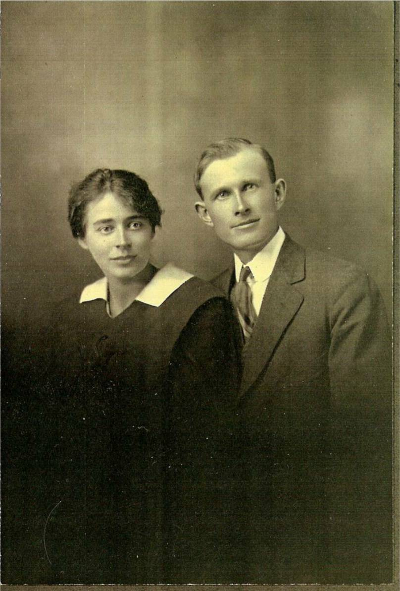
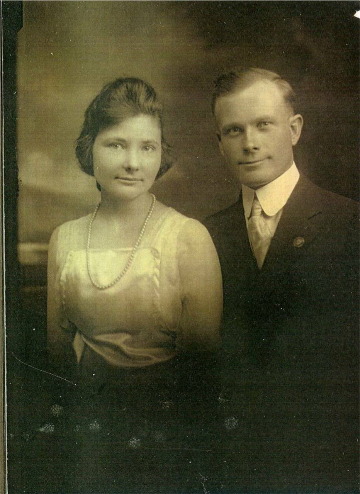

The Family Chronicle
No. 171 April 6, 2009


James A. and Kate (Mills) Watling
(Jane Glendenning Collection)
Ernest and Alice (MacLean) Watling
(Jane Glendenning Collection)
Black River
This is a first attempt to describe the Black River in 1939 as I remember it:
Included Little Branch, Fowlie’s Mill, the back road (between Fowlie’s Mill and Jim Cameron’s on the north side of the Little Branch River), Hexham, the North side, Upper Black River, MacBeath’s bridge, Upper Settlement (west of highway 11 on the north side of the River), wells’ Brook, Jimmie’s Backside (east of highway 11 on the south side of the River), Ken’s Hill, Sturgeon Cove, Mackenzie Road, Base’s Corner, Finno’s turn, The Meadows, Anderson Settlement, the “shortcut to Point Aux Carr,
Had about 120 homes
Had four one room schools – Little Branch, Victoria, Middle Black River or Cameron School and Upper Black River
Was served by the Miramichi Rural High School in a neighbouring community
Had two churches – St. Stephen’s United and St. Paul’s Presbyterian
Was served by two grocery stores (George Adams and Sandy MacNaughton)
Had one gravity flow gasoline pump (George Adams)
Had two blacksmiths (Sinclair Williston and Johnny Dick)
Was served by Agricultural society #103
Had one water powered sawmill (Herb Fowlie)
Had one diesel powered sawmill (John W. MacNaughton)
Had a community hall
Did not have paved roads
Did not have public transportation (Godfrey’s Bus started in 1941)
Had no herd law - cows not cars had the right of way
Had three covered bridges
Had its own telephone operator (Annie MacNaughton)
Was served by two telephone companies – NB Telephone Company and the Government Telephone Service (limited to Hardwicke Parish)
Did not have electric power
Did not have inside plumbing
Used kerosene and gas lamps for illumination
Used lanterns for at night and in barns
Kept food cool by setting it on the basement floor or in a nearby spring
Heated homes with stoves or, if you were fortunate, with a furnace
Cooked meals over a wood stove
Took its woodland bearings from Jessie’s Corner
Walked to school a distance of up to two miles summer and winter. (Many walked or cycled to the first high school classes in Bay du Vin)
Went to church on foot or by horse, wagon or sled and walked back a second time on the same day to attend Young Peoples meetings
Families raised their own wheat and took it to the Monks in Rogersville to be ground
Lived on mixed farms - hens, cow, pigs, horses, vegetables, grain, hay, etc.
Held dances in the various schools
Engaged to a large degree in barter rather than cash
Every home cut their own wood
Exchanged labour for cutting wood, threshing grain and digging potatoes
Radios were battery powered
Got their drinking water from an outside well or by using a hand pump
Purchased gasoline by the gallon not by a dollar amount
Used treadle sewing machines
Used Simpson’s or Eaton’s catalogues for toilet paper
Clocks and watches had to be wound daily
Got their cream from the top of the milk bottle
Had to crank auto engines in order to start.
Cars had mechanical not hydraulic brakes
Most men used braces (suspenders) to hold up their pants
CORRECTIONS AND OTHER RECOLLECTIONS SOUGHT
The Family Chronicle (Copyright) is an occasional newsletter published by Don Glendenning and posted on the family website. It is intended to share information about my family, community and the times in which I grew up. While every effort is made to be accurate, errors are likely to occur. Comments, enquiries and information may be sent to 62 Queen Elizabeth Drive, Charlottetown, PEI, C1A 3A9. Tel: 902 892 5859. Email: don@glendenning.net Web: www.glendenning.net/don